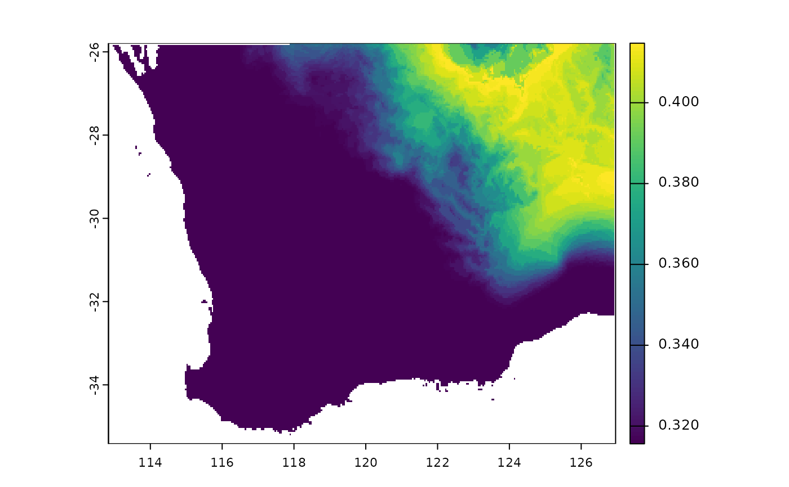

R/gdm.predict.R
predict.gdm.RdThis function predicts biological distances between sites or times using a
model object returned from gdm. Predictions between site
pairs require a data frame containing the values of predictors for pairs
of locations, formatted as follows: distance, weights, s1.X, s1.Y, s2.X,
s2.Y, s1.Pred1, s1.Pred2, ..., s1.PredN, s2.Pred1, s2.Pred2, ..., s2.PredN, ...,
Predictions of biological change through time require two raster stacks or
bricks for environmental conditions at two time periods, each with a
layer for each environmental predictor in the fitted model.
# S3 method for gdm
predict(object, data, time=FALSE, predRasts=NULL, ...)A gdm model object resulting from a call to gdm.
Either a data frame containing the values of predictors for pairs
of sites, in the same format and structure as used to fit the model using
gdm or a raster stack if a prediction of biological change
through time is needed.
For a data frame, the first two columns - distance and weights - are required by the function but are not used in the prediction and can therefore be filled with dummy data (e.g. all zeros). If geo is TRUE, then the s1.X, s1.Y and s2.X, s2.Y columns will be used for calculating the geographical distance between each site for inclusion of the geographic predictor term into the GDM model. If geo is FALSE, then the s1.X, s1.Y, s2.X and s2.Y data columns are ignored. However these columns are still REQUIRED and can be filled with dummy data (e.g. all zeroes). The remaining columns are for N predictors for Site 1 and followed by N predictors for Site 2. The order of the columns must match those in the site-pair table used to fit the model.
A raster stack should be provided only when time=T and should contain one layer for each environmental predictor in the same order as the columns in the site-pair table used to fit the model.
TRUE/FALSE: Is the model prediction for biological change through time?
A raster stack characterizing environmental conditions for a different time in the past or future, with the same extent, resolution, and layer order as the data object. Required only if time=T.
Ignored.
predict returns either a response vector with the same length as the number of rows in the input data frame or a raster depicting change through time across the study region.
##set up site-pair table using the southwest data set
sppData <- southwest[, c(1,2,14,13)]
envTab <- southwest[, c(2:ncol(southwest))]
# remove soils (no rasters for these)
envTab <- envTab[,-c(2:6)]
sitePairTab <- formatsitepair(sppData, 2, XColumn="Long", YColumn="Lat", sppColumn="species",
siteColumn="site", predData=envTab)
#> Warning: No abundance column was specified, so the species data are
#> assumed to be presences.
#> Aggregation function missing: defaulting to length
gdmMod <- gdm(sitePairTab, geo=TRUE)
##predict GDM
predDiss <- predict(gdmMod, sitePairTab)
##time example
rastFile <- system.file("./extdata/swBioclims.grd", package="gdm")
envRast <- raster::stack(rastFile)
##make some fake climate change data
futRasts <- envRast
##reduce winter precipitation by 25%
futRasts[[3]] <- futRasts[[3]]*0.75
timePred <- predict(gdmMod, envRast, time=TRUE, predRasts=futRasts)
raster::plot(timePred)
